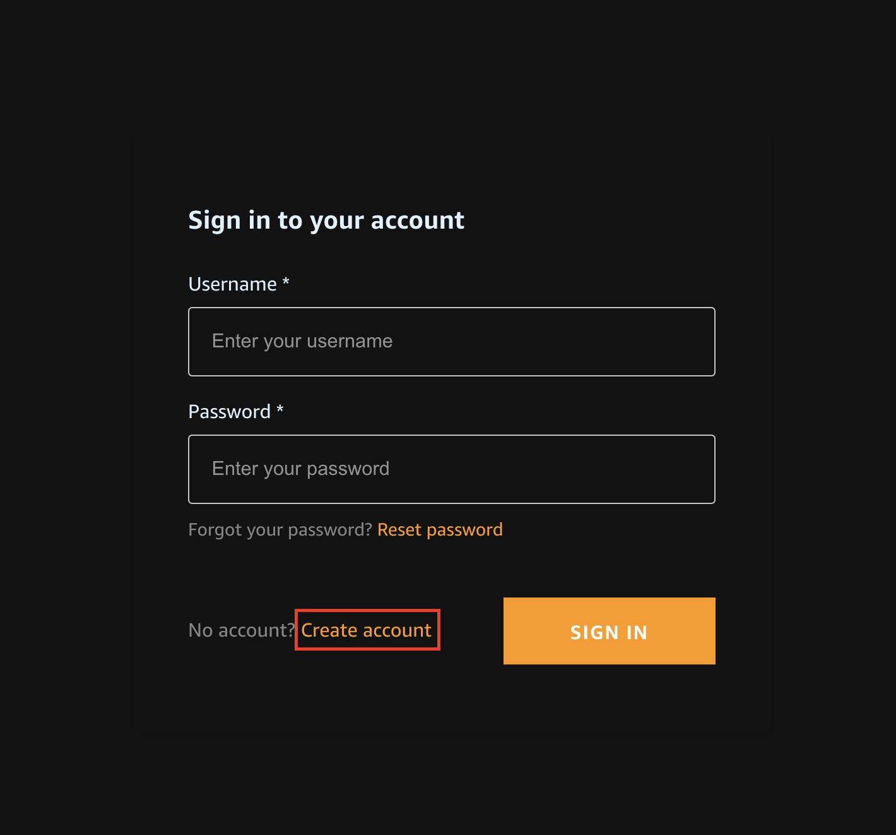
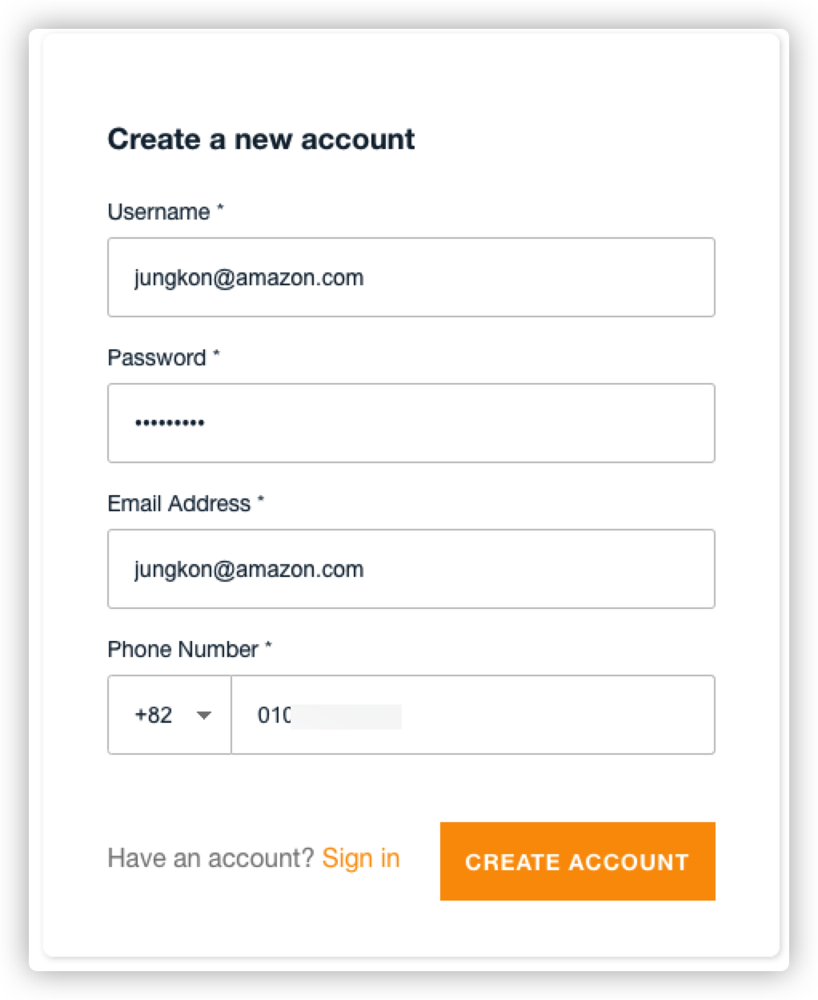

Amplify Framework는 Amazon Cognito를 기본 인증 공급자로 사용합니다. Amazon Cognito는 사용자 등록, 인증, 계정 복구 및 기타 작업을 처리하는 강력한 사용자 디렉토리 서비스입니다. 이 튜토리얼에서는 Amazon Cognito 및 사용자 이름/암호 로그인을 사용하여 프로그램에 인증을 추가하는 방법에 대해 알아봅니다.
❯ amplify add auth
...
Using service: Cognito, provided by: awscloudformation
...
The current configured provider is Amazon Cognito.
...
Do you want to use the default authentication and security configuration? Default configuration
Warning: you will not be able to edit these selections.
How do you want users to be able to sign in? Email
Do you want to configure advanced settings? No, I am done.
Successfully added auth resource ccpdemof9bde27b locally
...
❯ amplify push
✔ Successfully pulled backend environment dev from the cloud.
Current Environment: dev
┌──────────┬─────────────────┬───────────┬───────────────────┐
│ Category │ Resource name │ Operation │ Provider plugin │
├──────────┼─────────────────┼───────────┼───────────────────┤
│ Auth │ ccpdemof9bde27b │ Create │ awscloudformation │
└──────────┴─────────────────┴───────────┴───────────────────┘
? Are you sure you want to continue? Yes
⠇ Updating resources in the cloud. This may take a few minutes...
UPDATE_IN_PROGRESS amplify-ccpdemo-dev-145951 AWS::CloudFormation::Stack Thu Nov 04 2021 17:29:12 GMT+0900 (Korean Standard Time) User Initiated
⠏ Updating resources in the cloud. This may take a few minutes...
...
✔ All resources are updated in the cloud
❯ amplify console
✔ Which site do you want to open? · Console
설정을 잘못했을 경우에는 아래와 같이 인증 기능을 제거한 이후 다시 추가할 수 있습니다.
❯ amplify status
Current Environment: dev
┌──────────┬─────────────────┬───────────┬───────────────────┐
│ Category │ Resource name │ Operation │ Provider plugin │
├──────────┼─────────────────┼───────────┼───────────────────┤
│ Auth │ ccpdemof9bde27b │ Delete │ awscloudformation │
└──────────┴─────────────────┴───────────┴───────────────────┘ ```
❯ amplify remove auth
? Choose the resource you would want to remove ccpdemof9bde27b
? Are you sure you want to delete the resource? This action deletes all files related to this resource from t
he backend directory. Yes
Successfully removed resource
❯ amplify push
...
✔ Successfully pulled backend environment dev from the cloud.
Current Environment: dev
┌──────────┬─────────────────┬───────────┬───────────────────┐
│ Category │ Resource name │ Operation │ Provider plugin │
├──────────┼─────────────────┼───────────┼───────────────────┤
│ Auth │ ccpdemof9bde27b │ Delete │ awscloudformation │
└──────────┴─────────────────┴───────────┴───────────────────┘
? Are you sure you want to continue? Yes
⠧ Updating resources in the cloud. This may take a few minutes...
...
이제 인증 서비스를 AWS에 구축했으므로 React 앱에 인증을 추가해야 합니다. 로그인 절차를 만드는 것은 상당히 어렵고 시간이 걸릴 수 있습니다. 하지만 Amplify Framework에는 aws-exports.js 파일에 지정된 구성을 사용하여 기본 UI를 손쉽게 추가할 수 있습니다.
import { withAuthenticator, AmplifySignOut } from '@aws-amplify/ui-react'
export default withAuthenticator(App)
function App() {
return (
<div className="App">
<AmplifySignOut />
<CCP />
</div>
)
}
import { withAuthenticator, AmplifySignOut } from '@aws-amplify/ui-react'
import CCP from './component/ccp/ccp.component'
import './App.css'
function App() {
return (
<div className="App">
<AmplifySignOut />
<CCP />
</div>
)
}
export default withAuthenticator(App)
npm start
웹브라우저를 통해 아래의 화면을 확인할 수 있습니다. 로그인을 위한 Cognito 서비스의 기본 UI 입니다. Create Account 버튼을 클릭하여 새로운 계정을 생성합니다. Amplify Framework 를 사용하고, 간단한 라이브러리/컴포넌트 추가만으로 이와 같이 로그인/로그아웃 기능을 추가할 수 있습니다. 
아래와 같이 본인의 정보를 이용하여 계정을 생성합니다. 이메일은 인증을 위한 확인 메일을 받아야하므로 실제 사용하는 이메일 주소를 입력해야합니다. 
이후 이메일 인증을 거쳐 계정 생성을 완료합니다. 계정 생성을 완료한 이후 브라우저의 개인 정보 보호 모드로 다시 http://localhost:3000 으로 접속해봅니다. 생성한 계정으로 로그인을 완료합니다. 그러면 아래와 같은 화면을 보게됩니다. Cognito 서비스 로그인은 성공했으나, CCP 로그인 계정과는 연동이 되지 않았기 때문에, Custom CCP 는 아래와 같이 제대로 로그인 되지 않습니다.
이전 Chapter 에서 CCP 가 로그인 된 이유는, Connect Console 을 통해 로그인 한 이후 같은 브라우저에서 CCP 를 로딩했기 때문입니다. 브라우저의 개인 정보 보호모드(Chrome 브라우저의 경우 Incognito 모드)로 접속을 하면 이전 브라우저의 세션 정보가 공유되지 않기 때문에, 로그인과 같은 계정 관련 구현을 할 때는 개인 정보 보호모드로 테스트를 해야합니다. CCP 는 Firefox, Chrome 브라우저를 지원하므로 해당 브라우저에만 테스트가 가능합니다.